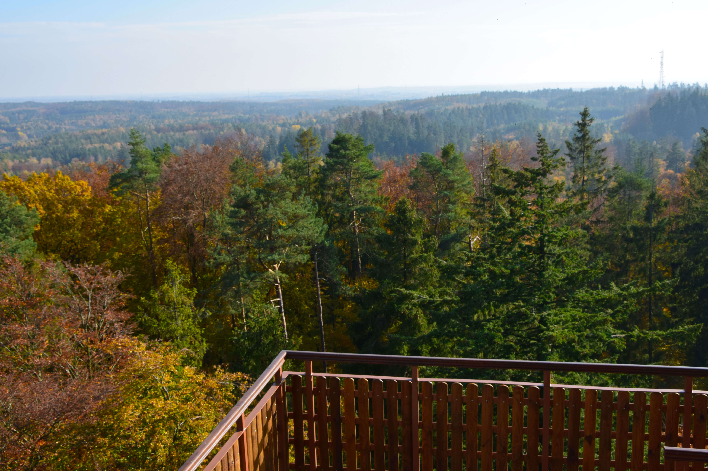
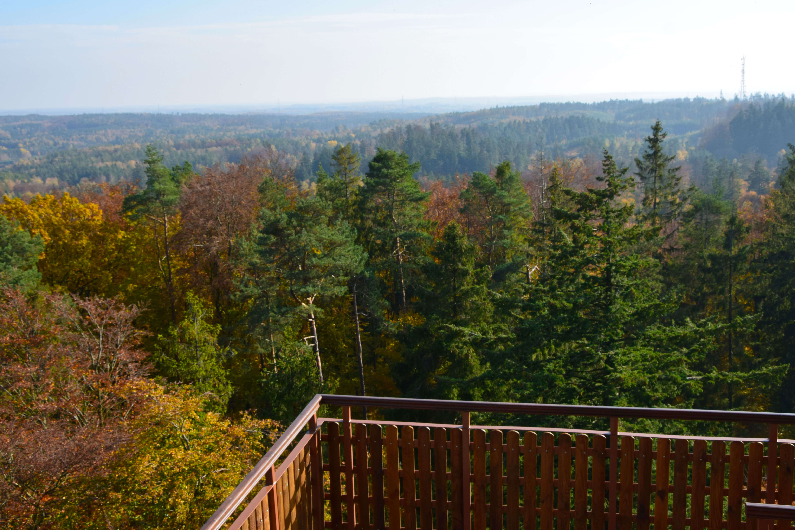

O NAS
W 2003r. po wycięciu najdłuższej deski świata, grupa inicjatywna w składzie: Andrzej Młyński, Daniel Czapiewski, Zdzisław Nosewicz, w porozumieniu z innymi przedstawicielami branży turystycznej podjeła decyzję o utworzeniu Lokalnej Organizacji Turystycznej „Szczyt Wieżyca”. Głównymi celami organizacji jest rozwój turystyki poprzez promocje Kaszub jako regionu atrakcyjnego turystycznie. Członkami stowarzyszenia są wielkie przedsiębiorstwa turystyczne, jak i mniejsze punkty noclegowe czy gastronomi, gospodarstwa agroturystyczne, stadniny, a także miłościcy Kaszub.
Od kilku lat LOT jest organizatorem kilku dużych imprez plenerowych m. in. Wielkiej Parady Bryczek i Wozów. Imprezy cieszą się dużą popularnością wśród mieszkańców i turystów. Podczas wspólnej zabawy turyści mają możliwośc obcowania z kulturą kaszubską tj. z językiem kaszubskim i muzyką, strojami kaszubskimi, a także mogą poznać zwyczaje kaszubskie np. zażywanie tabaki.
HISTORIA
Góra Wieżyca zawsze budziła żywe zainteresowanie człowieka. Nazwa góry wywodzi się z niemieckiej nazwy Turmberg (Turm - wieża). Prawdopodobnie pierwszą wieżę widokową postawiono już w 1889 roku. Dwadzieścia lat później z miejscowego kamienia i cegły zbudowano na szczycie 15-metrową wieżę widokową z tarasem na górze, która prawdopodobnie istaniała do 1920 roku. Obecnie na jej miejscu stoi krzyż.


Wieża Widokowa im. Jana Pawła II znajduję się na Szczycie Wieżyca na terenie Gminy Stężyca na Pojezierzu Kaszuskim. Szczyt wznosi się 328,6 m n.p.m i jest najwyższym z naturalnych szczytów na Niżu Polskim. Wierzchołek porośniety jest 150-letnim lasem bukowym. Przez Szczyt prowadzi turystyczny Szlak Wzgórz Szymbarskich.W 1997 roku Gmina Stężyca oddała do użytku metalową konstrukcje wieży widokowej im. Jana Pawła II, z której rozpościera się wspaniały widok na Wzgórza Szymarskie i okolice. Szczyt Wieżyca to miejsce, które jest licznie odwiedzane przez tłumy turystów o każdej porze roku.
ATRAKCJE
Wokół Szczytu Wieżyca znajduje się wiele atrakcji turysycznych. Pozwala to na zaplanowanie interesującej wycieczki dla całej rodziny o każdej porze roku. Nowe inwestycje sprawiają, że region z roku na rok staje się co raz to bardziej atrakcyjniejszym miejscem. Serdecznie zapraszamy.
Szczyt Wieżyca
Wieża Widokowa im. Jana Pawła II na górze Wieżyca. Punkt widokowy na piękną panorame Kaszub do podziwiania o każdej porze roku.

"Dom do góry nogami"
Mieści się w CEiPR w Szymarku. Oryginalnych rozmiarów, w pełni wyposażony i umeblowany dom jednorodzinny postawiony na dachu.

Promenada z przystanią
Zlokalizowana nad Jezriorem Raduńskim w Stężycy. Nowoczesna promenada o długości 800m z przystanią wodną, wypożyczalnią kajaków i rowerków.
Konie
W Szymbarku i okolicy znajduje się około 350 koni. Oferują jazdę konną, przejażdżki wozami lub bryczkami latem oraz kuligi zimą.

Rowery
Kilometry ścieżek rowerowych pośród malowniczych lasów, prowadzących do wielu atrakcji turystycznych.

Narty
Dwa nowoczesne ośrodki narciarskie z wypożyczalniami sprzętu, tu każdy znajdzie coś dla siebie.
GALERIA


 


JAK DOJECHAĆ

Samochodem
Krajowa droga DK20 odcinek Żukowo - Kościerzyna, skręt na Szymbark, parking leśny.

Autobusem
Droga krajowa DK20 Trasa Gdańsk - Kościerzyna, przystanek autobusowy: Szymbark skrzyżowanie.
Pociągiem
Linia Gdynia Główna - Kościerzyna, przystanek kolejowy: Wieżyca.
KONTAKT
Lokalna Organizacja Turystyczna "Szczyt Wieżyca"
e-mail: lotszczytwiezyca@turystycznekaszuby.pl fthremus@interia.pl
ul. Szymbarskich Zakładników 12, 83-315 Szymbark
KRS:0000169781 NIP:5891790689 REGON:19293983400000